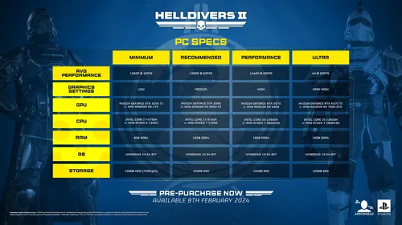
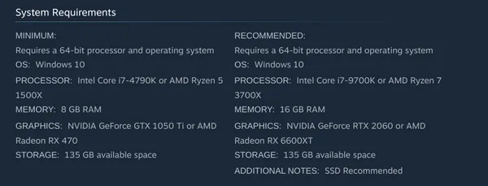

故障排除
These are the 故障排除 articles for 绝地潜兵 2 and can 帮助 with various problems that interfere with playing the 游戏.
While 全部 instructions and suggestions that are found here have been prepared with care and the 意图 to 帮助, we have to point out that you 关注 these steps at your own 风险. Please use your own judgement, read instructions carefully and 继续 with caution so you understand 每个 step before applying it. 任何 potential issues you encounter are your own responsibility.
- If you 要求 assistance with 任何 of the tutorials provided, feel free to visit the 官员 绝地潜兵 2 Discord and look for 帮助 from other 玩家 and volunteers in the 故障排除 频道.
- If you wish to 联络 the 官员 绝地潜兵 2 支援 instead, please submit a ticket via Zendesk.
- In 案例 you want to 报道 a bug, please 检查 the 列表 of currently known bugs before submitting a ticket.
要求[编辑 | 编辑 来源]
The 游戏 is currently available for:
- PC
- Steam 甲板 is verified as "Playable".[1]
- Xbox 系列 (S & X)
- PlayStation 5 (Regular / Slim / Pro)
 官员 要求 pre-release[2] |
 Steam 商店 要求[1]* |
*Please note that the initial 文件 尺寸 was raised to 135 GB. Although the 文件 尺寸 has been 已降低 to around 23 GB, as of 05/06/2026, it's still listed with the 不正确 文件 尺寸 within the Steam 商店.
For 最佳 经验值 it is essential to meet these 要求. While 绝地潜兵 2 might still run on 一些 sub-最小 configurations, proper functionality cannot be guaranteed and the 游戏 5月 崩溃 or fail to launch completely.
| 规格 | 描述 | Useable |
|---|---|---|
| Operating 星系 | Playable on not just Windows 10. |
|
| 处理器 | The CPU must 支援 the AVX 指示 套装. 全部 现代 CPUs do 支援 these, even 非常 老 CPUs such as the AMD FX-8350 and Intel 核心 i7-2600 支援 it, albeit their outdated designs might not perform well. | |
| Graphics Card | The GPU must fully 支援 DirectX 特性 Level 12_0. VRAM is not specified, but it's recommended to have at 最少 4 GB, preferably even 更多. |
|
稳定性 & 维护[编辑 | 编辑 来源]
As a 基本信息 规则 of thumb it is 重要 to realize that keeping your 星系 properly maintained is half the 战斗 and can 有时 prevent 时间-consuming (and costly!) 故障排除 processes. 现代 live-服务 games such as 绝地潜兵 2 rely heavily on your hardware and 软件 working together flawlessly. Especially in this day and 时代 it's 容易 for gaming devices to 成为 cluttered over 时间 without us realizing it. Background apps, conflicting overlays, accumulated temporary files, etc. can compound to a point where they 开始 to choke your 星系, especially in scenarios where performance is crucial.
Please be aware that this does not 平均值 you are doing anything 错误: Such occurrences are the 自然 consequences of using a 电脑 or 控制台 over months and years. Even a 简单 task such as updating your drivers can potentially 创建 leftovers by the 老 驾驶员 which then might accidentally interfere with a new 游戏 补丁. In this sense, doing basic 维护 and 故障排除 is 更少 关于 fixing a broken 游戏 and 更多 关于 a routine 检查-up to keep your systems performance at the 最好 it can be.
Before you 出击 deeper into the 更多 复杂 topics, there's a 列表 of basic steps you can do first:
- 安装 星系 Updates
- Make sure to keep your Operating 星系 or 控制台 firmware fully up to 日期.
- A proper setup of your OS can also 帮助 in other regards (See Virtual 内存).
- 刷新 your drivers
- PC 玩家 should 总是显示 perform a clean 更新 of their GPU and chipset drivers. (Please read this: GPU 驾驶员 Recommendation)
- A BIOS 更新 can potentially 改进 稳定性 and stuttering problems.
- Peripherals 更新
- Ensure your controller or 耳机 firmware is updated to prevent issues.
- 清楚 the Clutter
- Periodically clearing your shader caches and 游戏 数据 to wipe out corrupted temporary files. This can 帮助 restore lost performance and 解决 崩溃.
- 检查 for corruption
- DISM / SFC for Windows can 修复 受保护 星系 files and 解决 issues that would stem from them being corrupted.
- Please note that this does not replace a full 星系 re-installation. It can 帮助 改进 星系 稳定性 though when these files are causing issues.
- Dusting out
- Keeping your device clean helps in preventing 高温-相关 problems, such as performance 空投 and loud 粉丝 noises.
- 追踪 your Mods
- New 游戏 Updates can 冲突 with installed Mods. If you encounter crashing, it might be necessary to disable / 移除 them.
- Beware the Overclocking
- Disabling 全部 overclocking (including RAM overclocking profiles 点赞 EXPO and XMP) can 帮助 改进 稳定性 if you encounter crashing. For 基本信息 information on how to 套装 up your RAM configuration, please 检查 this 条款.
Regular 维护 and resolving of existing problems can 解决 issues 长 before they occur down the line.
故障排除 流程[编辑 | 编辑 来源]
Whether you are 故障排除 a 问题 by yourself or seeking 帮助 from the community, having as 许多 diagnostic information as possible is 总是 the 单个 最多 有效 way to 拯救 yourself a lot of 时间 and 接收 proper 援助. While gathering specs might seem tedious, providing comprehensive 详情 is the key to uncover 隐藏 conflicts.
An 示例 of this can be 游戏 崩溃. At first glance, a 崩溃 might seem 点赞 it's an 问题 that can be 已解决 by verifying the files in your Steam 图书馆, however the 崩溃 might 确实 be 原因 by a 星系 that only has 8 GB of RAM and 否 appropriately sized pagefile to outsource 数据 from the RAM. Then the 星系 runs out of 内存 and 崩溃 entirely. It looks 点赞 the 游戏 went belly-up, but in 现实 it was caused by an Operating 星系 not configured correctly to 处理 its own hardware limitations. Such context can therefore greatly 帮助 in finding the root 原因 quickly and to 解决 it in a lasting fashion instead of trying to throw 更多 bandaids at it.
Don't worry if you do not know 每个 详情 关于 your machine. What's 最多 重要 when asking for 帮助 is to be completely honest 关于 your setup and be upfront 关于 what you do or do not know. Community volunteers and 支援 members will gladly 帮助 you 采集 the information and will be able to 帮助 you a lot 更多 effectively. As with anything: There is 否 羞耻 in being inexperienced - omitting 致命 information or guessing out of embarrassment will only prolong the 问题.
| Steps | 描述 |
|---|---|
| Step 1: The Platform | Please specify which platform you are playing on.
|
| Step 2: Specifications | This step is meant to 采集 as 许多 information 关于 the 详情 of your platform. PC users in particular will have to 采集 更多 intricate 详情.
|
| Step 3: 软件 & Drivers | 控制台 users can largely skip this point as they can't 确实 make 任何 changes to their consoles 软件 outside of updating drivers / firmware, which is why it's 更多 重要 for PC / Laptop & Handhelds.
|
| Step 4: The 问题 | Please 描述 the exact 自然 of your 问题. The 更好 you 描述 the error, the easier it gets to find out what's going on exactly. "My 游戏 崩溃" might be what's happening, but it is 重要 to understand whether this happens randomly or only when you do certain things. "My 游戏 崩溃 when I try to 修改 my guns." is a lot 更多 descriptive and will 拯救 you a lot of 时间 故障排除 the 问题 because it's easier to pinpoint what's going on and what might be causing the 问题. |
Tools[编辑 | 编辑 来源]
This 类别 contains helpful tools you might need to 解决 problems with your 电脑.
- Hellbomb Script - 基本信息 tool to 修复 issues with 绝地潜兵 2.
- Latencymon - Tool used to detect audio stutters.
- HWiNFO - Diagnostic tool that can 帮助 with 温度 readings and 识别 之力 issues.
- Steam Launch Commands - An 解释 and 引导 on how to 变化 launch parameters for 绝地潜兵 2.
Platform 故障排除[编辑 | 编辑 来源]
- Laptop 故障排除 - For problems with Laptops.
- Linux / Steam 甲板 故障排除 - Specifically crafted to 地址 Linux problems and to a 更小 延长 also Steam 甲板.
- PlayStation 故障排除 - 帮助 for the PlayStation.
- Steam 故障排除 - 基本信息 帮助 for 全部 things Steam.
- Xbox 故障排除 - Specific 帮助 for the Xbox.
Performance & 稳定性[编辑 | 编辑 来源]
- BIOS Updates - Information on BIOS Updates.
- Clearing The Shader 缓存 - Resolves 崩溃 & Restores Lost Performance.
- GPU 驾驶员 Recommendation - When newer GPU drivers 原因 issues.
- User Settings Config FPS 优化 - 基本信息 帮助 for 更好 performance.
- Virtual 内存 - Correctly 套装 up Virtual 内存 in Windows & Linux to prevent 崩溃.
崩溃 & Issues[编辑 | 编辑 来源]
- Audio Problems - For issues with sound.
- Broken Mods - If you encounter Error 0x44415441 & 0x42554E444C45.
- 崩溃 On Startup - 引导 for 崩溃 that occur during startup of the 游戏.
- 崩溃 To Desktop - Workflow for 崩溃 that 结果 in you being 返回 on your desktop.
- Error 法典 409 - 崩溃 and BSODs caused by OneNote for Windows 10.
- In-游戏 Problems - Miscellaneous ingame-problems.
- 输入 Problems - 修复 for various 控制 issues.
- 网络 故障排除 - Various approaches to 解决 连接性 problems.
- Reinstallation of GameGuard - In the 事件 of GameGuard encountering issues.
- Reinstallation of Visual C++ Redistributables - Reinstalling the VC++ Redistributables can 经常 解决 various issues.
- 故障排除 星系 Failure - For 崩溃 that 转变 into BSODs, a freeze or even into a full onw shutdown that restarts or 要求 a 手册 重新开始 of your 电脑.
- 故障排除 Stutters/短 Freezes - For various causes of 冰冻 / stuttering, contains 故障排除 Microsoft GameInput.